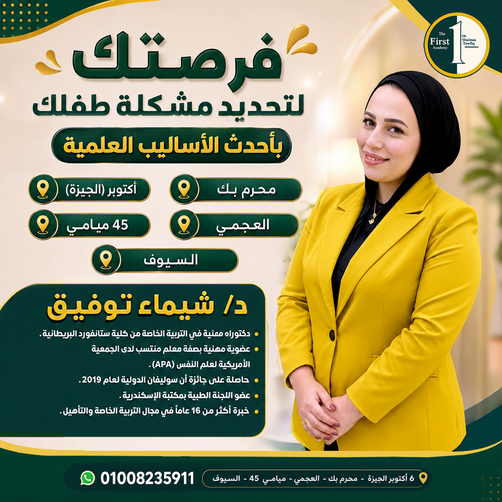

كل طفل بيتعلم ويتطور بطريقته... احنا هنا نساعده يلاقيها
من جلسات التخاطب والتأهيل لمتابعة فرط الحركة وتشتت الانتباه، فريقنا المتخصص بيبني لكل طفل ومراهق خطة على مقاسه، وبيتابع أهله خطوة بخطوة.
The First Academy... مركز واحد لرعاية وتأهيل طفلك ومراهقك
The First Academy مركز متخصص في رعاية وتأهيل الأطفال والمراهقين، بأحدث برامج التدخل العلاجي والتأهيلي، وقسم طبي ونفسي، تحت سقف واحد وبفريق واحد بيتابع الحالة من كل الجوانب — زي ما بيحصل بالظبط في مراكز التخاطب المتخصصة.
-
فريق متخصص لكل مجالدكتور نفسي وعصبي، أخصائيين تخاطب، تعديل سلوك، وتنمية مهارات — كل واحد شغال في تخصصه.
-
مجموعات مقسمة حسب قدرات كل طفلمش عدد سنين بس، احنا بنراعي مستوى وقدرات كل طفل في تقسيم المجموعات والجلسات.
-
تقارير أولية وبعديةكل خدمة بتتوثق بتقرير قبل البداية وبعد المتابعة، عشان الأهل ياخدوا صورة واضحة عن تطور طفلهم.
رعاية طبية ونفسية وتأهيلية تحت سقف واحد
من الكشف الأول لحد آخر جلسة متابعة، بنشتغل مع الطفل وأهله سوا على أساس علمي منظم.
كشف طبي نفسي وعصبي
تشخيص وتقييم حالات مثل فرط الحركة وتشتت الانتباه (ADHD)، وبناء خطة علاجية وتأهيلية مناسبة لكل حالة.
استشارات نفسية وتربوية
جلسات إرشاد للأهل والطفل مع د. شيماء توفيق، لمساعدة الأسرة على فهم احتياجات طفلها والتعامل معاها بأفضل شكل.
برامج تخاطب معتمدة
برامج علاج نطق ولغة حديثة ومعتمدة عالميًا، لتنمية مهارات التواصل عند الطفل بمختلف أعماره ومستوياته.
اختبارات ذكاء ونفسية
قياسات وأدوات علمية موثوقة لتقييم قدرات الطفل الذهنية والنفسية وتحديد نقاط القوة والاحتياج بدقة.
برامج معالجة حسية
أنشطة وتمارين متخصصة لتنظيم استجابة الطفل الحسية، وتحسين تركيزه وثباته في المهام اليومية.
برامج نفس حركية
تمارين حركية موجّهة تدعم التوازن والتناسق الحركي عند الطفل وتساعده على ضبط طاقته وسلوكه.
برامج صعوبات التعلم
خطط دعم أكاديمي فردية للأطفال اللي بيواجهوا صعوبة في القراءة أو الكتابة أو الحساب، بمتابعة مستمرة.
جلسات جماعية متطورة
أنشطة ضمن مجموعات صغيرة مقسمة حسب المستوى، لتنمية المهارات الاجتماعية والتفاعل مع الأقران.
إرشاد نفسي وأسري
دعم مستمر للأهل نفسهم، لمساعدتهم يبنوا بيئة منزلية مساندة ومتفهمة لاحتياجات طفلهم.
كل خدمة في المركز بتتوثق بتقرير أولي وتقرير متابعة، عشان تسير الجلسات بنهج علمي منظم وواضح للأهل من أول يوم.
مركز متخصص للأطفال والمراهقين
برامجنا مصممة لمرحلتين عمريتين مختلفتين، وكل مرحلة ليها أسلوب متابعة وجلسات يناسبها.
لكل احتياج... وحدة متخصصة ليه
The First Academy مقسّمة لوحدات متخصصة، كل وحدة ليها صفحتها وفريقها، دوس على أي وحدة تعرف تفاصيلها وتتواصل معاها مباشرة.
وحدة الشادو تيتشر
توفير وتوظيف أخصائيين شادو تيتشر للمدرسة والحضانة والمنزل.
اعرف أكترفرست للقيادة العقلية
برامج لتنمية قدرة الطفل على قيادة نفسه واتخاذ قراراته.
اعرف أكترفرست للمهارات الاجتماعية
تعليم الطفل التواصل وبناء الصداقات مع أقرانه.
اعرف أكترفرست للمهارات الأولية والتدخل المبكر
متابعة مبكرة لأطفال ما قبل المدرسة لبناء المهارات الأساسية.
اعرف أكترفرست للدعم النفسي
جلسات دعم نفسي للطفل والأسرة على حد سواء.
اعرف أكترفرست للتدريب وإعداد الكوادر
تأهيل وتدريب الأخصائيين الجدد على أعلى مستوى.
اعرف أكترفرست للتأهيل الخطابي المتكامل
برامج تخاطب وتأهيل لغوي شاملة لكل الأعمار.
اعرف أكترخطوات بسيطة عشان نبدأ مع طفلك
تواصل معانا
اتصل أو ابعت رسالة على أي فرع، وهنسمع منك تفاصيل حالة طفلك.
مقابلة شخصية وتقييم
يقابل الطفل فريقنا المتخصص، وناخد تقرير أولي واضح عن قدراته واحتياجاته.
خطة تأهيل مخصصة
بنحدد البرامج والجلسات المناسبة، ونوزع الطفل على المجموعة الأقرب لمستواه.
بداية المتابعة
الجلسات تبدأ مع تقارير دورية بعدية، عشان الأهل يبقوا شايفين التطور أول بأول.
هتلاقي The First Academy قريبة منك
5 فروع بتغطي أماكن مختلفة، وكل الفروع بتتواصل من خلال نفس رقم الواتساب.
6 أكتوبر – الجيزة
6 October – Gizaمحرم بك
Moharram Bekالعجمي
Agamiميامي 45
Miami 45السيوف
El Seouf
عايز تسأل عن حالة طفلك؟ احنا في انتظارك
ابعتلنا إيميل أو كلمنا على أي فرع، أو تابعنا على السوشيال ميديا عشان تشوف يومياتنا مع الأطفال.
infothefirst.academy55@gmail.com